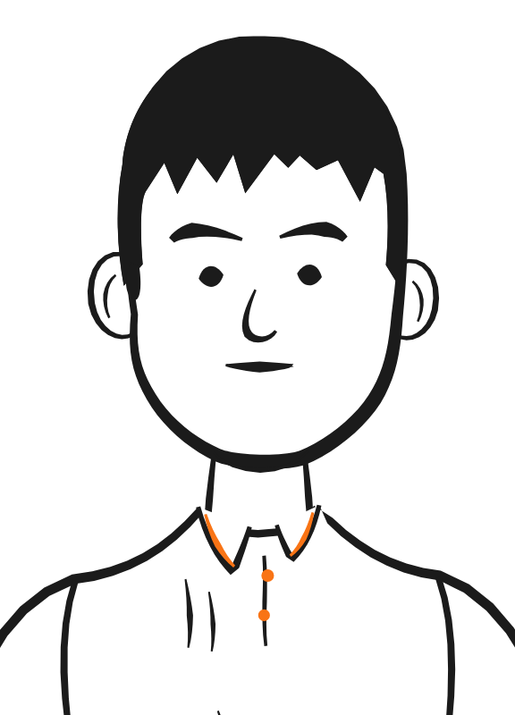
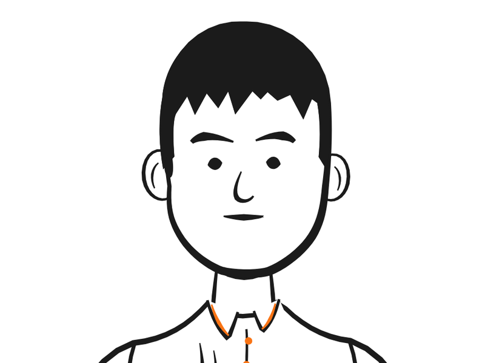
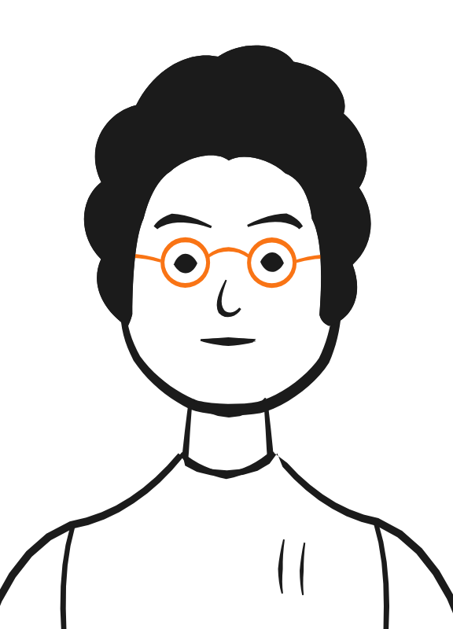
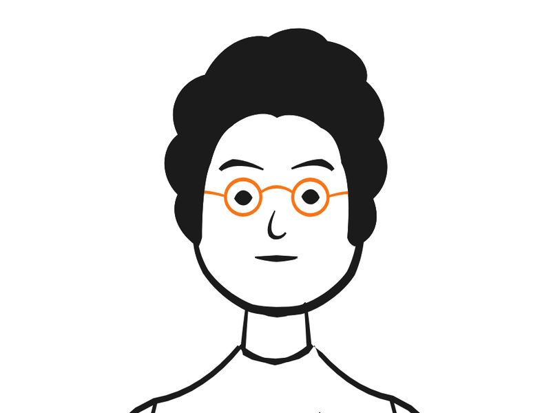
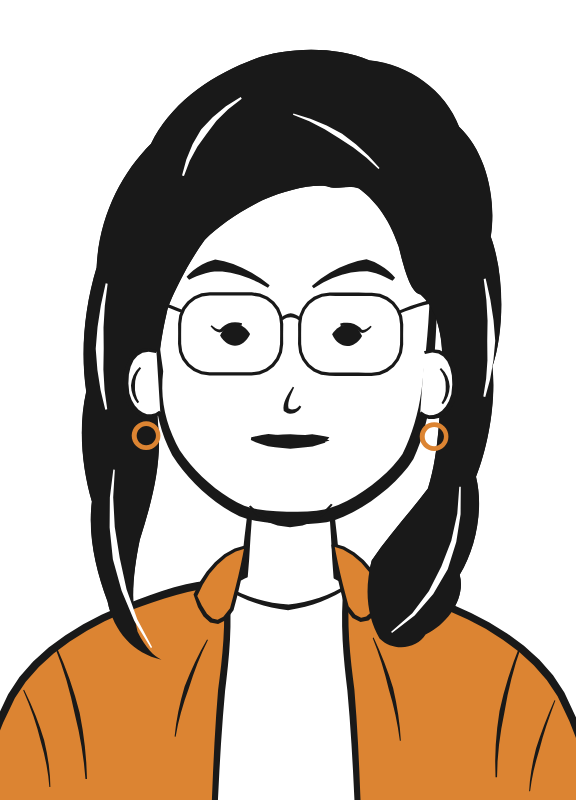
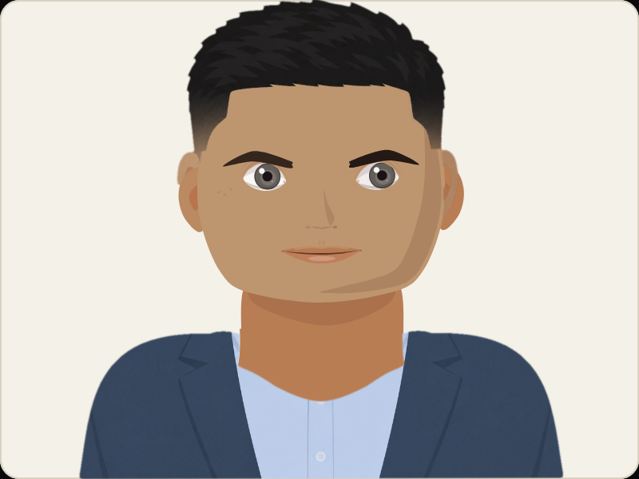
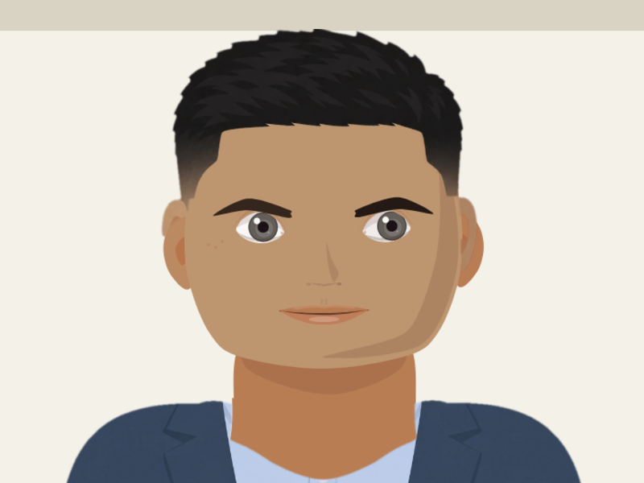
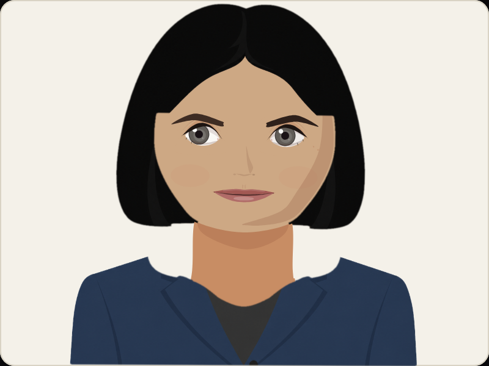
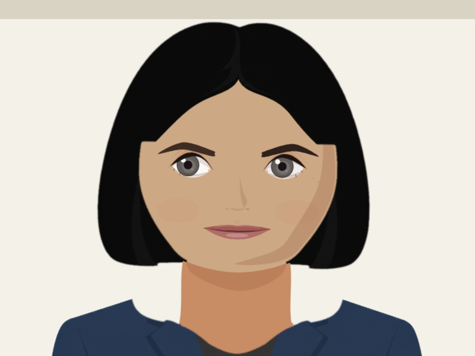

Peep
The portrait camera becomes wider, so the face shrinks relative to host width while the long shirt crop disappears.
uniform scale 87.5%

One 4:3 camera, tested against every shipping avatar. The approved crop keeps a small amount of upper torso while spending most of the frame on the face that speaks and listens.
The bands measure vertical framing: 6% air, 70% crown-to-chin, and 24% below the chin. Hair may cross the chin line; the landmark does not move to accommodate a hairstyle.
The portrait camera becomes wider, so the face shrinks relative to host width while the long shirt crop disappears.
uniform scale 87.5%

The curl silhouette keeps its headroom, but the new lateral field is conspicuous because the line-art torso was authored to fill a portrait window.
uniform scale 88.8%

Hair still extends through the torso band, but the actual clothing crop ends at the upper chest instead of reading as a half-body illustration.
uniform scale 88.2%
The camera ratio is already correct. The proposed frame is an 11% push-in plus vertical repositioning: less jacket, preserved shoulders, visible headroom.
uniform scale 111.4%

The same push-in removes most of the blazer mass. Her bob crosses the landmark bands, while crown and chin still determine the camera.
uniform scale 112.6%

Decision record: these are the neutral-pose approval pixels. Production now derives the same crop from each drawing's native landmarks; live torso, nod and frame-edge-hand checks remain the shipping evidence for motion.